វត្ថុបំណង
- 1. បង្កើតតារាងបំណែងចែកទិន្នន័យ
- 2. បកស្រាយទិន្នន័យតាមក្រាបផ្លិតនិងក្រាបខ្សែ ។
1. ក្រាបផ្លិត
ឧទាហរណ៍ 1 ៖ ពូចាន់ជាម្ចាស់កសិដ្ឋានចិញ្ចឹមសត្វមួយកន្លែង ។ ក្នុងកសិដ្ឋាននោះមានមាន់ចំនួន 60 ក្បាល ទាចំនួន 40 ក្បាល និងក្ងានចំនួន 20 ក្បាល ។
ដើម្បីងាយស្រួលក្នុងការសង្កេតចំនួនសត្វតាមប្រភេទនីមួយៗធៀបនឹងចំនួនសត្វទាំងអស់ គេត្រូវតាងចំនួនសត្វទាំងអស់ដោយរូបថាសមួយ រួចគេរកផលធៀបរវាងចំនួនសត្វតាមប្រភេទនិងចំនួនសត្វទាំងអស់ ។
ចំនួនសត្វទាំងអស់មាន
60 ក្បាល + 40 ក្បាល + 20 ក្បាល
ចំនួនមាន់មាន \(\displaystyle \frac{60}{120} = \frac{1}{2}\) នៃចំនួនសត្វទាំងអស់
មានន័យថា 1 ភាគ 2 នៃថាស ។
\(\displaystyle \frac{1}{2}\) នៃថាស បើគិតជាមុំត្រូវនឹង \(\displaystyle \frac{1}{2} \times 360^\circ = 180^\circ\) ។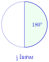
ចំនួនទាមាន \(\displaystyle \frac{40}{120} = \frac{1}{3}\) នៃចំនួនសត្វទាំងអស់
មានន័យថា 1 ភាគ 3 នៃថាស ។
\(\displaystyle \frac{1}{3}\) នៃថាស បើគិតជាមុំត្រូវនឹង \(\displaystyle \frac{1}{3} \times 360^\circ = 120^\circ\) ។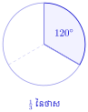
ចំនួនក្ងានមាន \(\displaystyle \frac{20}{120} = \frac{1}{6}\) នៃចំនួនសត្វទាំងអស់
មានន័យថា 1 ភាគ 6 នៃថាស ។
\(\displaystyle \frac{1}{6}\) នៃថាស បើគិតជាមុំត្រូវនឹង \(\displaystyle \frac{1}{6} \times 360^\circ = 60^\circ\) ។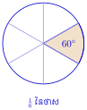
គេបានតារាងបំណែងចែកទិន្នន័យ
| សត្វ | ចំនួនសត្វ | មុំចម្រៀកថាស |
| មាន់ | 60 | \(\displaystyle 180^\circ\) |
| ទា | 40 | \(\displaystyle 120^\circ\) |
| ក្ងាន | 20 | \(\displaystyle 60^\circ\) |
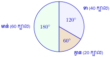
▶ មើលរូបមានចលនា៖ សង់ក្រាបផ្លិតដោយរ៉ាប័រទ័រ
ចំនួនសត្វតាមផ្នែកនីមួយៗដែលគេបានតាងនោះមានរាងជាផ្លិតទើបគេហៅថា ក្រាបផ្លិត ។
ក្រាបផ្លិត ជាក្រាបដែលមានរាងជាថាសរង្វង់តាងឱ្យទិន្នន័យស្ថិតិដើម្បីងាយស្រួលក្នុងការបកស្រាយទិន្នន័យ ។
ឧទាហរណ៍ 2 ៖ គេបានធ្វើការកត់ត្រា ការលក់សាំង(គិតជាពាន់លីត្រ) ក្នុងស្ថានីយលក់សាំងចំនួន 4 កន្លែងដែលគេតាងដោយ A, B, C និង D នៅសប្តាហ៍ទី 1 នៃខែមករា ។
| ស្ថានីយសាំង | A | B | C | D |
| សាំង(ពាន់លីត្រ) | 90 | 140 | 30 | 20 |
គេចង់បង្ហាញទិន្នន័យខាងលើជាក្រាបផ្លិត
ដំបូងគេត្រូវរកចំនួនសាំងលក់សរុបទាំង 4 ស្ថានីយ
90 ពាន់លីត្រ + 140 ពាន់លីត្រ + 30 ពាន់លីត្រ + 20 ពាន់លីត្រ = 280 ពាន់លីត្រ ។
ចំនួនសាំងលក់សរុបនេះ នឹងត្រូវយកមកតាងជារង្វង់ ឬថាសមួយ ។ ដូច្នេះ 280 ពាន់លីត្រត្រូវនឹងមុំផ្ចិតរង្វង់ \(\displaystyle 360^\circ\) ។
គេបាន
90 ពាន់លីត្រ ត្រូវនឹងមុំ \(\displaystyle \frac{360^\circ}{280} \times 90 = 115.7^\circ\)
140 ពាន់លីត្រ ត្រូវនឹងមុំ \(\displaystyle \frac{360^\circ}{280} \times 140 = 180^\circ\)
30 ពាន់លីត្រ ត្រូវនឹងមុំ \(\displaystyle \frac{360^\circ}{280} \times 30 = 38.6^\circ\)
20 ពាន់លីត្រ ត្រូវនឹងមុំ \(\displaystyle \frac{360^\circ}{280} \times 20 = 25.7^\circ\)
តាមរង្វាស់មុំខាងលើ គេអាចសង់ក្រាបផ្លិតបានដោយប្រើរ៉ាបទ័រ ។
គេបានតារាងបំណែងចែកទិន្នន័យ
| ស្ថានីយសាំង | ចំនួនសាំង(ពាន់លីត្រ) | មុំចម្រៀកថាស |
| A | 90 | \(\displaystyle 115.7^\circ\) |
| B | 140 | \(\displaystyle 180^\circ\) |
| C | 30 | \(\displaystyle 38.6^\circ\) |
| D | 20 | \(\displaystyle 25.7^\circ\) |
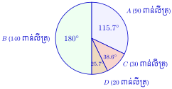
ប្រើប្រាស់ទិន្នន័យក្នុងតារាងខាងក្រោម ដើម្បីសង់ក្រាបផ្លិតដែលបង្ហាញអំពីការចំណាយប្រចាំខែរបស់ក្រុមហ៊ុនមួយ ហើយបកស្រាយទិន្នន័យដែលបង្ហាញនៅក្នុងក្រាបផ្លិតនោះ ។
| ការចំណាយប្រចាំខែ | ចំនួនទឹកប្រាក់ |
| កាតទូរស័ព្ទ | 500 000 ៛ |
| សាំងយានយន្ត | 1 000 000 ៛ |
| សម្ភារៈការិយាល័យ | 1 200 000 ៛ |
| អគ្គិសនី | 900 000 ៛ |
សង់ក្រាបផ្លិត
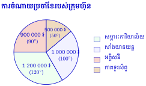
ផ្អែកលើក្រាបផ្លិត ក្រុមហ៊ុនចំណាយច្រើនជាងគេលើសម្ភារៈការិយាល័យនិងចំណាយតិចជាងគេលើកាតទូរស័ព្ទធៀបនឹងចំណាយសរុប 3 600 000 ៛ ក្នុងមួយខែ ។
ការប្រើប្រាស់ក្រាបផ្លិតមានភាពងាយស្រួលក្នុងការវិភាគទិន្នន័យដែលបានបែងចែកតាមផ្នែកនីមួយៗ ។ ការដឹងពីចំណាយនេះជួយឱ្យក្រុមហ៊ុនអាចធ្វើផែនការចំណាយនៅខែបន្ទាប់ ជាពិសេសក្រុមហ៊ុនក៏អាចព្យាករពីការចំណាយប្រចាំឆ្នាំដើម្បីដាក់បញ្ចូលក្នុងផែនការហិរញ្ញវត្ថុរបស់ខ្លួនផងដែរ ។
ខាងស្តាំនេះជាតារាងទិន្នន័យនៃមធ្យោបាយធ្វើដំណើររបស់និស្សិតនៅសាកលវិទ្យាល័យមួយ ។ តាងទិន្នន័យជាក្រាបផ្លិត ។
| មធ្យោបាយធ្វើដំណើរ | អត្រាជាភាគរយ |
| ឡាន | 10 |
| ម៉ូតូ | 75 |
| កង់ | 15 |
តាងអត្រា 100% ដោយរូបថាសទាំងមូលឬរង្វង់
គេដឹងថា 100% ត្រូវនឹងមុំផ្ចិត \(\displaystyle 360^\circ\)
ឡាន 10% នៃថាសត្រូវនឹង \(\displaystyle \frac{360^\circ}{100} \times 10 = 36^\circ\)
ម៉ូតូ 75% នៃថាសត្រូវនឹង \(\displaystyle \frac{360^\circ}{100} \times 75 = 270^\circ\)
កង់ 15% នៃថាសត្រូវនឹង \(\displaystyle \frac{360^\circ}{100} \times 15 = 54^\circ\)
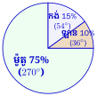
ក្រាបផ្លិតខាងក្រោម បង្ហាញពីចំណូលប្រចាំខែរបស់ក្រុមហ៊ុនលក់ឧបករណ៍អេឡិចត្រូនិក
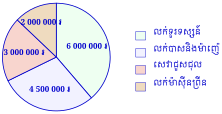
- ក. បកស្រាយក្រាបផ្លិតនេះ ។
- ខ. តើក្រុមហ៊ុនទទួលបានចំណូលពីការលក់អ្វីខ្លះ? តើព័ត៌មាននេះមានសារៈប្រយោជន៍អ្វីខ្លះសម្រាប់ក្រុមហ៊ុនក្នុងការធ្វើផែនការហិរញ្ញវត្ថុ?
មើលចម្លើយ
- ក.
គណនាចំណូលសរុបប្រចាំខែរបស់ក្រុមហ៊ុន ៖
\[\begin{aligned} S &= 6~000~000 + 4~500~000 + 2~000~000 + 3~000~000 \\ &= 15~500~000\text{ ៛} \end{aligned}\]ផ្អែកលើក្រាបផ្លិត ៖
- ការលក់ទូរទស្សន៍ផ្តល់ចំណូលច្រើនជាងគេ គឺ \(\displaystyle 6~000~000\text{ ៛}\) ស្មើនឹង \(\displaystyle \frac{6~000~000}{15~500~000} \times 100\% \approx 38.71\%\) (ត្រូវនឹងមុំផ្ចិតប្រហែល \(\displaystyle 139.35^\circ\))
- ការលក់បាសនិងម៉ាញ៉េផ្តល់ចំណូល \(\displaystyle 4~500~000\text{ ៛}\) ស្មើនឹង \(\displaystyle \frac{4~500~000}{15~500~000} \times 100\% \approx 29.03\%\) (ត្រូវនឹងមុំផ្ចិតប្រហែល \(\displaystyle 104.52^\circ\))
- សេវាជួសជុលផ្តល់ចំណូល \(\displaystyle 3~000~000\text{ ៛}\) ស្មើនឹង \(\displaystyle \frac{3~000~000}{15~500~000} \times 100\% \approx 19.35\%\) (ត្រូវនឹងមុំផ្ចិតប្រហែល \(\displaystyle 69.68^\circ\))
- ការលក់ម៉ាស៊ីនព្រីនផ្តល់ចំណូលតិចជាងគេ គឺ \(\displaystyle 2~000~000\text{ ៛}\) ស្មើនឹង \(\displaystyle \frac{2~000~000}{15~500~000} \times 100\% \approx 12.90\%\) (ត្រូវនឹងមុំផ្ចិតប្រហែល \(\displaystyle 46.45^\circ\))
- ខ.
ក្រុមហ៊ុនទទួលបានចំណូលពីការលក់ ៖ ទូរទស្សន៍ បាសនិងម៉ាញ៉េ ម៉ាស៊ីនព្រីន និងពីសេវាជួសជុលឧបករណ៍អេឡិចត្រូនិក ។
ព័ត៌មាននេះមានសារៈប្រយោជន៍យ៉ាងសំខាន់សម្រាប់ការធ្វើផែនការហិរញ្ញវត្ថុ ៖- ជួយកំណត់មុខទំនិញជាយុទ្ធសាស្ត្រ (ទូរទស្សន៍ និងបាស/ម៉ាញ៉េ រួមចំណែកជិត \(\displaystyle 68\%\) នៃចំណូលសរុប) ក្នុងការបែងចែកទុនបម្រុងទិញស្តុក
- ជួយរៀបចំផែនការទីផ្សារដើម្បីជំរុញការលក់ម៉ាស៊ីនព្រីនដែលនៅមានចំណូលទាប
- ជួយពង្រីកសេវាកម្មជួសជុលដើម្បីបង្កើតប្រភពចំណូលបន្ថែម
- ជួយព្យាករចំណូលប្រចាំឆ្នាំ និងគ្រប់គ្រងលំហូរសាច់ប្រាក់ឱ្យមានស្ថិរភាព ។
ដូចនេះ ក្រុមហ៊ុនរកចំណូលបានច្រើនជាងគេពីការលក់ទូរទស្សន៍ (\(\displaystyle 38.71\%\)) និងតិចជាងគេពីម៉ាស៊ីនព្រីន (\(\displaystyle 12.90\%\))។
ក្នុងកសិដ្ឋានមួយមានចិញ្ចឹមសត្វទាំងអស់ចំនួន 75 ក្បាល ក្នុងនោះមានគោ 15 ក្បាល ជ្រូក 28 ក្បាល ក្របី 10 ក្បាល និងទា 22 ក្បាល ។
- ក. បង្កើតតារាងបំណែងចែកទិន្នន័យ
- ខ. សង់ក្រាបផ្លិតតាងទិន្នន័យខាងលើ ។
មើលចម្លើយ
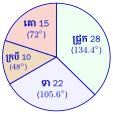
- ក.
គណនាមុំចម្រៀកថាស និងភាគរយតាងសត្វនីមួយៗ ៖
ចំនួនសត្វសរុបគឺ \(\displaystyle 75\) ក្បាល ត្រូវនឹងមុំផ្ចិត \(\displaystyle 360^\circ\) និង \(\displaystyle 100\%\)- គោ ៖ មុំចម្រៀក \(\displaystyle =\frac{360^\circ}{75}\times15=72^\circ\), ភាគរយ \(\displaystyle =\frac{15}{75}\times100\%=20\%\)
- ជ្រូក ៖ មុំចម្រៀក \(\displaystyle =\frac{360^\circ}{75}\times28=134.4^\circ\), ភាគរយ \(\displaystyle =\frac{28}{75}\times100\%\approx37.33\%\)
- ក្របី ៖ មុំចម្រៀក \(\displaystyle =\frac{360^\circ}{75}\times10=48^\circ\), ភាគរយ \(\displaystyle =\frac{10}{75}\times100\%\approx13.33\%\)
- ទា ៖ មុំចម្រៀក \(\displaystyle =\frac{360^\circ}{75}\times22=105.6^\circ\), ភាគរយ \(\displaystyle =\frac{22}{75}\times100\%\approx29.33\%\)
គេបានតារាងបំណែងចែកទិន្នន័យ ៖
ប្រភេទសត្វ ចំនួនសត្វ (ក្បាល) ភាគរយ (%) មុំចម្រៀកថាស គោ 15 20% \(\displaystyle 72^\circ\) ជ្រូក 28 37.33% \(\displaystyle 134.4^\circ\) ក្របី 10 13.33% \(\displaystyle 48^\circ\) ទា 22 29.33% \(\displaystyle 105.6^\circ\) សរុប 75 100% \(\displaystyle 360^\circ\) - ខ. ក្រាបផ្លិតតាងទិន្នន័យខាងលើត្រូវបានបង្ហាញដូចរូបខាងលើ ។
ដូចនេះ តារាងបំណែងចែកនិងក្រាបផ្លិតត្រូវបានបង្កើតពេញលេញដោយជ្រូកមានចំណែកធំជាងគេ (\(\displaystyle 134.4^\circ\)) និងក្របីតូចជាងគេ (\(\displaystyle 48^\circ\))។
2. ក្រាបខ្សែ
ក្រាបខ្សែ ជាក្រាបដែលប្រើប្រាស់ខ្សែបន្ទាត់សម្រាប់ភ្ជាប់ពីចំណុចដៅមួយទៀត ដើម្បីបង្ហាញពីបម្រែបម្រួលទិន្នន័យក្នុងអំឡុងពេលជាក់លាក់ណាមួយ ។
ឧទាហរណ៍ 1 ៖ តារាងខាងក្រោមបង្ហាញពីផែនការសន្សំរបស់បូរ៉ាក្នុងរយៈពេលមួយឆ្នាំ ។
| ខែ | មករា | កុម្ភៈ | មីនា | មេសា | ឧសភា | មិថុនា | កក្កដា | សីហា | កញ្ញា | តុលា | វិច្ឆិកា | ធ្នូ |
| ទឹកប្រាក់ | 20 000 | 10 000 | 15 000 | 25 000 | 30 000 | 8 000 | 22 000 | 28 000 | 30 000 | 40 000 | 36 000 | 6 000 |
សង់ក្រាបខ្សែតាងទិន្នន័យខាងលើ
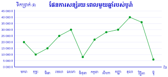
តាមរយៈក្រាបខ្សែនេះបង្ហាញថា ផែនការសន្សំរបស់បូរ៉ាមានការឡើងចុះដែលមិនស្ថិតនៅក្នុងចំនួនថេរឬប្រហាក់ប្រហែលគ្នាទេ។ យើងអាចសន្និដ្ឋានបានថា ផែនការសន្សំនេះប្រហែលជាប្រែប្រួលដោយសារស្ថានភាពនៃប្រាក់ចំណូលដែលគាត់ទទួលបាន និងការចំណាយប្រចាំខែរបស់គាត់ ។ ផែនការសន្សំជួយឱ្យអ្នកទុកដាក់ចំណូលមួយផ្នែកដោយទៀងទាត់សម្រាប់ប្រើប្រាស់នាពេលអនាគត ដែលជាយុទ្ធសាស្ត្រក្នុងការធ្វើផែនការហិរញ្ញវត្ថុ ដើម្បីសម្រេចបានគោលដៅ ។ ពេលខ្លះអ្នកមិនអាចដើរតាមផែនការបានទាំងស្រុងទេ ប៉ុន្តែការពិនិត្យតាមដានទៀងទាត់អាចជួយឱ្យអ្នកសម្រេចគោលដៅនេះបាន ។
ឧទាហរណ៍ 2 ៖ បកស្រាយក្រាបខ្សែខាងក្រោមដែលបង្ហាញពីផែនការចំណាយរយៈពេលមួយឆ្នាំរបស់បូរ៉ា ។
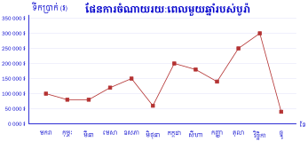
| ខែ | មករា | កុម្ភៈ | មីនា | មេសា | ឧសភា | មិថុនា | កក្កដា | សីហា | កញ្ញា | តុលា | វិច្ឆិកា | ធ្នូ |
| ចំណាយ | 100 000 | 80 000 | 80 000 | 120 000 | 150 000 | 60 000 | 200 000 | 180 000 | 140 000 | 250 000 | 300 000 | 40 000 |
ផ្អែកលើក្រាបខ្សែនេះ ផែនការចំណាយកើនឡើងគួរកត់សម្គាល់ចាប់ពីខែកក្កដា ហើយធ្លាក់ចុះបន្តិចនៅខែកញ្ញា ប៉ុន្តែនឹងកើនឡើងខ្ពស់បំផុតនៅខែវិច្ឆិកា ។ ដូច្នេះយើងអាចសន្និដ្ឋានថា ផែនការចំណាយពីមួយខែទៅមួយខែរបស់គាត់មិនស្មើគ្នាទេ ។ ផែនការចំណាយអាចឱ្យអ្នកព្យាករពីការចំណាយនាពេលអនាគតដែលមានប្រយោជន៍ក្នុងការធ្វើផែនការហិរញ្ញវត្ថុប្រចាំខែឬប្រចាំឆ្នាំរបស់បុគ្គល គ្រួសារ ឬស្ថាប័នមួយ ។
ក្រាបខ្សែខាងក្រោមបង្ហាញពីផែនការហិរញ្ញវត្ថុប្រចាំឆ្នាំរបស់បូរ៉ា ។ តាមរយៈក្រាបខ្សែទាំងបី តើផែនការចំណាយនិងសន្សំរបស់គាត់ស្ថិតនៅក្នុងចំណូលរបស់គាត់ដែរឬទេ? តើផែនការសន្សំរបស់គាត់តិចបំផុតប៉ុន្មានរៀល បើធៀបនឹងចំណូលរបស់គាត់? ចូរពន្យល់ ។
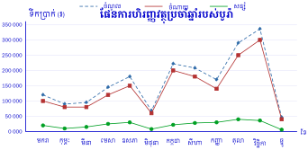
| ខែ | មករា | កុម្ភៈ | មីនា | មេសា | ឧសភា | មិថុនា | កក្កដា | សីហា | កញ្ញា | តុលា | វិច្ឆិកា | ធ្នូ |
| ចំណូល | 120 000 | 90 000 | 95 000 | 145 000 | 180 000 | 68 000 | 222 000 | 208 000 | 170 000 | 290 000 | 336 000 | 46 000 |
| ចំណាយ | 100 000 | 80 000 | 80 000 | 120 000 | 150 000 | 60 000 | 200 000 | 180 000 | 140 000 | 250 000 | 300 000 | 40 000 |
| សន្សំ | 20 000 | 10 000 | 15 000 | 25 000 | 30 000 | 8 000 | 22 000 | 28 000 | 30 000 | 40 000 | 36 000 | 6 000 |
តាមរយៈក្រាបខ្សែបង្ហាញពីផែនការហិរញ្ញវត្ថុប្រចាំឆ្នាំរបស់បូរ៉ា យើងអាចសន្និដ្ឋានបានថាផែនការចំណាយនិងសន្សំរបស់គាត់ស្ថិតនៅក្នុងរង្វង់ទឹកប្រាក់នៃចំណូលរបស់គាត់ ។ គាត់មានផែនការចំណាយនិងសន្សំប្រចាំខែច្បាស់លាស់ បើទោះបីខែខ្លះគាត់ទទួលបានចំណូលតិចក៏ដោយ ។ ផែនការសន្សំរបស់គាត់តិចបំផុត 6 000 ៛ ។ ជាមធ្យមផែនការសន្សំរបស់គាត់មានចំនួនប្រហែល 14% នៃចំណូលសរុបប្រចាំឆ្នាំ ។
ក្រាបខ្សែខាងក្រោមបង្ហាញពីផែនការសន្សំប្រចាំខែរបស់តារា ដើម្បីទិញកង់មួយតម្លៃ 235 000 ៛ ។
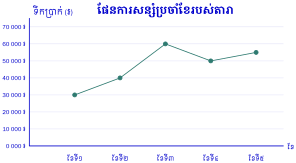
| ខែ | ខែទី១ | ខែទី២ | ខែទី៣ | ខែទី៤ | ខែទី៥ |
| ទឹកប្រាក់សន្សំ | 30 000 | 40 000 | 60 000 | 50 000 | 55 000 |
- ក. ចូរបកស្រាយក្រាបខ្សែអំពីផែនការសន្សំប្រចាំខែរបស់តារា ។
- ខ. តាមរយៈផែនការសន្សំនេះ តើតារាអាចសម្រេចបានគោលដៅក្នុងរយៈពេល 5 ខែដែរឬទេ? ចូរពន្យល់ ។
មើលចម្លើយ
- ក.
បកស្រាយក្រាបខ្សែអំពីការសន្សំរបស់តារា ៖
- ខែទី១ ៖ សន្សំបាន \(\displaystyle 30~000\text{ ៛}\)
- ខែទី២ ៖ ការសន្សំកើនឡើងដល់ \(\displaystyle 40~000\text{ ៛}\) (កើន \(\displaystyle 10~000\text{ ៛}\))
- ខែទី៣ ៖ ការសន្សំកើនឡើងដល់កម្រិតអតិបរមា គឺ \(\displaystyle 60~000\text{ ៛}\) (កើន \(\displaystyle 20~000\text{ ៛}\))
- ខែទី៤ ៖ ការសន្សំថយចុះបន្តិចមកត្រឹម \(\displaystyle 50~000\text{ ៛}\) (ថយ \(\displaystyle 10~000\text{ ៛}\))
- ខែទី៥ ៖ ការសន្សំកើនឡើងវិញដល់ \(\displaystyle 55~000\text{ ៛}\) (កើន \(\displaystyle 5~000\text{ ៛}\))
ជារួម ផែនការសន្សំមានសន្ទុះកើនឡើងល្អ និងរក្សាបានយ៉ាងហោចណាស់ \(\displaystyle 30~000\text{ ៛}\) ក្នុងមួយខែ។
- ខ.
គណនាប្រាក់សន្សំសរុបក្នុងរយៈពេល 5 ខែ ៖
\[\begin{aligned} S &= 30~000 + 40~000 + 60~000 + 50~000 + 55~000 \\ &= 235~000\text{ ៛} \end{aligned}\]តម្លៃកង់គឺ \(\displaystyle 235~000\text{ ៛}\) ស្មើគ្នានឹងប្រាក់សន្សំសរុប \(\displaystyle S\) ។
ដូចនេះ តារាអាចសម្រេចគោលដៅទិញកង់ក្នុងរយៈពេល 5 ខែ ព្រោះប្រាក់សន្សំសរុបគ្រប់គ្រាន់ល្មម (\(\displaystyle 235~000\text{ ៛}\) លើ \(\displaystyle 235~000\text{ ៛}\))។
លំហាត់
ការបោះឆ្នោតជ្រើសរើសអ្នកដឹកនាំក្នុងទីក្រុងមួយ បង្ហាញលទ្ធផលដូចតារាងខាងក្រោម៖
ឈ្មោះបេក្ខជន A B C D ចំនួនសន្លឹកឆ្នោត 2045 4238 8605 12012 តាងព័ត៌មានខាងលើដោយក្រាបផ្លិត ។
មើលដំណោះស្រាយ
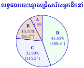
គណនាចំនួនសន្លឹកឆ្នោតសរុប ៖
\[\begin{aligned} N &= 2~045 + 4~238 + 8~605 + 12~012 \\ &= 26~900\text{ សន្លឹក} \end{aligned}\]សន្លឹកឆ្នោតសរុប \(\displaystyle 26~900\) ត្រូវនឹងមុំផ្ចិត \(\displaystyle 360^\circ\) និង \(\displaystyle 100\%\) ។
គណនាមុំចម្រៀកថាស និងភាគរយសម្រាប់បេក្ខជននីមួយៗ ៖បេក្ខជន A ៖
\[\begin{aligned} \theta_A &= \frac{360^\circ}{26~900} \times 2~045 \approx 27.37^\circ \\ p_A &= \frac{2~045}{26~900} \times 100\% \approx 7.60\% \end{aligned}\]បេក្ខជន B ៖
\[\begin{aligned} \theta_B &= \frac{360^\circ}{26~900} \times 4~238 \approx 56.71^\circ \\ p_B &= \frac{4~238}{26~900} \times 100\% \approx 15.75\% \end{aligned}\]បេក្ខជន C ៖
\[\begin{aligned} \theta_C &= \frac{360^\circ}{26~900} \times 8~605 \approx 115.17^\circ \\ p_C &= \frac{8~605}{26~900} \times 100\% \approx 31.99\% \end{aligned}\]បេក្ខជន D ៖
\[\begin{aligned} \theta_D &= \frac{360^\circ}{26~900} \times 12~012 \approx 160.75^\circ \\ p_D &= \frac{12~012}{26~900} \times 100\% \approx 44.65\% \end{aligned}\]
តារាងបំណែងចែកទិន្នន័យ ៖
បេក្ខជន សន្លឹកឆ្នោត ភាគរយ (%) មុំចម្រៀកថាស A 2 045 7.60% \(\displaystyle 27.37^\circ\) B 4 238 15.75% \(\displaystyle 56.71^\circ\) C 8 605 31.99% \(\displaystyle 115.17^\circ\) D 12 012 44.65% \(\displaystyle 160.75^\circ\) សរុប 26 900 100% \(\displaystyle 360^\circ\) ផ្អែកលើមុំចម្រៀកថាសខាងលើ គេសង់បានក្រាបផ្លិតដូចរូបខាងលើ ។
ដូចនេះ បេក្ខជន D ទទួលបានសន្លឹកឆ្នោតច្រើនជាងគេ (\(\displaystyle 44.65\%\), មុំ \(\displaystyle 160.75^\circ\)) ហើយបេក្ខជន A តិចជាងគេ (\(\displaystyle 7.60\%\), មុំ \(\displaystyle 27.37^\circ\))។ក្រាបផ្លិតខាងស្តាំបង្ហាញពីដំណាំសំខាន់ៗ ដែលតំបន់មួយបានដាំលើដីចំនួន 450 ហិកតា ។
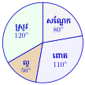
▶ មើលរូបមានចលនា៖ សង់ក្រាបផ្លិតដោយរ៉ាប័រទ័រ
- ក. រកភាគរយនៃដីដំណាំនីមួយៗ
- ខ. រកផ្ទៃក្រឡាដីដំណាំនីមួយៗ ។
មើលដំណោះស្រាយ
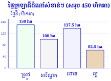
តាមក្រាបផ្លិតក្នុងសៀវភៅពុម្ព មុំចម្រៀកថាសនៃដំណាំទាំង \(\displaystyle 4\) គឺ ៖ ស្រូវ \(\displaystyle 120^\circ\), សណ្ដែក \(\displaystyle 80^\circ\), ពោត \(\displaystyle 110^\circ\), និងល្ង \(\displaystyle 50^\circ\) (ផលបូកមុំ \(\displaystyle 120^\circ + 80^\circ + 110^\circ + 50^\circ = 360^\circ\)) ។
- ក.
គណនាភាគរយនៃដីដំណាំនីមួយៗធៀបនឹងផ្ទៃដីសរុប (មុំ \(\displaystyle 360^\circ\)) ៖
ស្រូវ ៖
\[p_{\text{ស្រូវ}} = \frac{120^\circ}{360^\circ} \times 100\% = \frac{1}{3} \times 100\% \approx 33.33\%\]សណ្ដែក ៖
\[p_{\text{សណ្ដែក}} = \frac{80^\circ}{360^\circ} \times 100\% = \frac{2}{9} \times 100\% \approx 22.22\%\]ពោត ៖
\[p_{\text{ពោត}} = \frac{110^\circ}{360^\circ} \times 100\% = \frac{11}{36} \times 100\% \approx 30.56\%\]ល្ង ៖
\[p_{\text{ល្ង}} = \frac{50^\circ}{360^\circ} \times 100\% = \frac{5}{36} \times 100\% \approx 13.89\%\]
- ខ.
គណនាផ្ទៃក្រឡាដីដំណាំនីមួយៗលើផ្ទៃដីសរុប \(\displaystyle 450\text{ ហិកតា}\) ៖
ស្រូវ ៖
\[S_{\text{ស្រូវ}} = 450 \times \frac{120^\circ}{360^\circ} = 450 \times \frac{1}{3} = 150\text{ ហិកតា}\]សណ្ដែក ៖
\[S_{\text{សណ្ដែក}} = 450 \times \frac{80^\circ}{360^\circ} = 450 \times \frac{2}{9} = 100\text{ ហិកតា}\]ពោត ៖
\[S_{\text{ពោត}} = 450 \times \frac{110^\circ}{360^\circ} = 450 \times \frac{11}{36} = 137.5\text{ ហិកតា}\]ល្ង ៖
\[S_{\text{ល្ង}} = 450 \times \frac{50^\circ}{360^\circ} = 450 \times \frac{5}{36} = 62.5\text{ ហិកតា}\]
ផ្ទៀងផ្ទាត់ផលបូកផ្ទៃក្រឡា ៖ \(\displaystyle 150 + 100 + 137.5 + 62.5 = 450\text{ ហិកតា}\) (ត្រឹមត្រូវ) ។
ដូចនេះ ផ្ទៃដីដាំស្រូវមាន \(\displaystyle 150\text{ ហិកតា}\) (\(\displaystyle 33.33\%\)) សណ្ដែក \(\displaystyle 100\text{ ហិកតា}\) (\(\displaystyle 22.22\%\)) ពោត \(\displaystyle 137.5\text{ ហិកតា}\) (\(\displaystyle 30.56\%\)) និងល្ង \(\displaystyle 62.5\text{ ហិកតា}\) (\(\displaystyle 13.89\%\))។
គេបែងចែកអ្នកទទួលបានប្រាក់ចំណូលប្រចាំថ្ងៃជា 4 ប្រភេទតាងដោយ A, B, C និង D ។ ក្រាបផ្លិតខាងស្តាំបង្ហាញពីចំនួនមនុស្សទទួលបានប្រាក់ចំណូលផ្សេងៗគ្នា ។
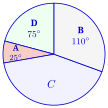
- ក. គណនាមុំនៃផ្នែក C
- ខ. គិតផ្នែកនីមួយៗជាភាគរយ ។
មើលដំណោះស្រាយ
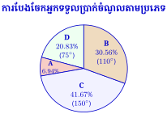
តាមក្រាបផ្លិត មុំនៃផ្នែកនីមួយៗមាន \(\displaystyle \theta_A = 25^\circ\), \(\displaystyle \theta_B = 110^\circ\), \(\displaystyle \theta_D = 75^\circ\) ហើយមុំរង្វង់ទាំងមូលគឺ \(\displaystyle 360^\circ\) ។
- ក.
គណនាមុំនៃផ្នែក C ៖
\[\begin{aligned} \theta_C &= 360^\circ - (\theta_A + \theta_B + \theta_D) \\ &= 360^\circ - (25^\circ + 110^\circ + 75^\circ) \\ &= 360^\circ - 210^\circ \\ &= 150^\circ \end{aligned}\] - ខ.
គិតផ្នែកនីមួយៗជាភាគរយធៀបនឹងរង្វង់ទាំងមូល (\(\displaystyle 360^\circ\)) ៖
ផ្នែក A ៖
\[p_A = \frac{25^\circ}{360^\circ} \times 100\% = \frac{5}{72} \times 100\% \approx 6.94\%\]ផ្នែក B ៖
\[p_B = \frac{110^\circ}{360^\circ} \times 100\% = \frac{11}{36} \times 100\% \approx 30.56\%\]ផ្នែក C ៖
\[p_C = \frac{150^\circ}{360^\circ} \times 100\% = \frac{5}{12} \times 100\% \approx 41.67\%\]ផ្នែក D ៖
\[p_D = \frac{75^\circ}{360^\circ} \times 100\% = \frac{5}{24} \times 100\% \approx 20.83\%\]
ផ្ទៀងផ្ទាត់ ៖ \(\displaystyle 6.94\% + 30.56\% + 41.67\% + 20.83\% = 100\%\) ។
ដូចនេះ មុំនៃផ្នែក C គឺ \(\displaystyle 150^\circ\) ហើយភាគរយតាមផ្នែកគឺ \(\displaystyle A \approx 6.94\%\), \(\displaystyle B \approx 30.56\%\), \(\displaystyle C \approx 41.67\%\), \(\displaystyle D \approx 20.83\%\)។
គេធ្វើសម្ភាសន៍សិស្សចំនួន 30 នាក់ក្នុងថ្នាក់រៀនមួយពីចំណូលចិត្តផ្លែឈើ ហើយទទួលបានលទ្ធផលដូចក្នុងតារាងខាងក្រោម៖
ឈ្មោះផ្លែឈើ ក្រូច ចេក ស្វាយ មៀន ចំនួនសិស្ស 8 6 12 4 - ក. តាងទិន្នន័យជាក្រាបផ្លិត
- ខ. តាងទិន្នន័យជាក្រាបសសរ ។
មើលដំណោះស្រាយ
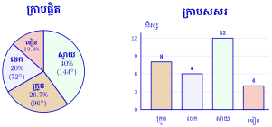
ចំនួនសិស្សសរុបគឺ \(\displaystyle N = 8 + 6 + 12 + 4 = 30\) នាក់ ។
- ក.
តាងទិន្នន័យជាក្រាបផ្លិត ៖
គណនាមុំចម្រៀកថាស និងភាគរយតាងផ្លែឈើនីមួយៗ ៖- ក្រូច ៖ មុំ \(\displaystyle =\frac{360^\circ}{30}\times8=96^\circ\), ភាគរយ \(\displaystyle =\frac{8}{30}\times100\%\approx26.67\%\)
- ចេក ៖ មុំ \(\displaystyle =\frac{360^\circ}{30}\times6=72^\circ\), ភាគរយ \(\displaystyle =\frac{6}{30}\times100\%=20\%\)
- ស្វាយ ៖ មុំ \(\displaystyle =\frac{360^\circ}{30}\times12=144^\circ\), ភាគរយ \(\displaystyle =\frac{12}{30}\times100\%=40\%\)
- មៀន ៖ មុំ \(\displaystyle =\frac{360^\circ}{30}\times4=48^\circ\), ភាគរយ \(\displaystyle =\frac{4}{30}\times100\%\approx13.33\%\)
តារាងបំណែងចែកទិន្នន័យ ៖
ឈ្មោះផ្លែឈើ ចំនួនសិស្ស ភាគរយ (%) មុំចម្រៀកថាស ក្រូច 8 26.67% \(\displaystyle 96^\circ\) ចេក 6 20.00% \(\displaystyle 72^\circ\) ស្វាយ 12 40.00% \(\displaystyle 144^\circ\) មៀន 4 13.33% \(\displaystyle 48^\circ\) សរុប 30 100% \(\displaystyle 360^\circ\) - ខ. តាងទិន្នន័យជាក្រាបសសរ ៖
យកអ័ក្សដេកតាងប្រភេទផ្លែឈើ (ក្រូច, ចេក, ស្វាយ, មៀន) និងអ័ក្សឈរតាងចំនួនសិស្ស (ពី 0 ដល់ 14 នាក់)។ កម្ពស់សសរនីមួយៗស្មើនឹងចំនួនសិស្សរៀងគ្នាគឺ 8, 6, 12, និង 4 នាក់។
ក្រាបផ្លិតនិងក្រាបសសរត្រូវបានបង្ហាញដូចរូបខាងលើ ។
ដូចនេះ ស្វាយត្រូវបានសិស្សចូលចិត្តច្រើនជាងគេ (\(\displaystyle 40\%\), មុំ \(\displaystyle 144^\circ\)) និងមៀនតិចជាងគេ (\(\displaystyle 13.33\%\), មុំ \(\displaystyle 48^\circ\))។ក្រាបផ្លិតខាងស្តាំប្រាប់ពីប្រភេទសិស្សក្នុងថ្នាក់រៀនមួយ ។
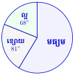
- ក. រកមុំចម្រៀកថាសតាងសិស្សមធ្យម
- ខ. រកភាគរយនៃប្រភេទសិស្សនីមួយៗ ។
មើលដំណោះស្រាយ
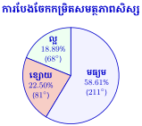
តាមក្រាបផ្លិត មុំតាងសិស្សល្អគឺ \(\displaystyle 68^\circ\) និងមុំតាងសិស្សខ្សោយគឺ \(\displaystyle 81^\circ\) ។
- ក.
គណនាមុំចម្រៀកថាសតាងសិស្សមធ្យម ៖
ដោយផលបូកមុំក្នុងរង្វង់ស្មើ \(\displaystyle 360^\circ\) គេបាន ៖\[\begin{aligned} \theta_{\text{មធ្យម}} &= 360^\circ - (\theta_{\text{ល្អ}} + \theta_{\text{ខ្សោយ}}) \\ &= 360^\circ - (68^\circ + 81^\circ) \\ &= 360^\circ - 149^\circ \\ &= 211^\circ \end{aligned}\] - ខ.
គណនាភាគរយនៃប្រភេទសិស្សនីមួយៗ ៖
សិស្សល្អ ៖
\[p_{\text{ល្អ}} = \frac{68^\circ}{360^\circ} \times 100\% = \frac{17}{90} \times 100\% \approx 18.89\%\]សិស្សខ្សោយ ៖
\[p_{\text{ខ្សោយ}} = \frac{81^\circ}{360^\circ} \times 100\% = \frac{9}{40} \times 100\% = 22.50\%\]សិស្សមធ្យម ៖
\[p_{\text{មធ្យម}} = \frac{211^\circ}{360^\circ} \times 100\% \approx 58.61\%\]
ផ្ទៀងផ្ទាត់ ៖ \(\displaystyle 18.89\% + 22.50\% + 58.61\% = 100\%\) ។
ដូចនេះ មុំចម្រៀកថាសតាងសិស្សមធ្យមគឺ \(\displaystyle 211^\circ\) ហើយភាគរយគឺ សិស្សល្អ \(\displaystyle \approx 18.89\%\), សិស្សខ្សោយ \(\displaystyle = 22.50\%\), និងសិស្សមធ្យម \(\displaystyle \approx 58.61\%\)។
ក្នុងកសិដ្ឋានមួយគេចិញ្ចឹមសត្វ 120 ក្បាលដែលក្នុងនោះមានសត្វជ្រូក 35 ក្បាល សត្វគោ 20 ក្បាល សត្វមាន់ 53 ក្បាល និងសត្វទា 12 ក្បាល ។
- ក. តាងទិន្នន័យជាក្រាបផ្លិត
- ខ. តាងទិន្នន័យជាក្រាបសសរ
- គ. តើក្នុងកសិដ្ឋាននោះចិញ្ចឹមសត្វជ្រូក លើសសត្វគោប៉ុន្មានភាគរយ ?
មើលដំណោះស្រាយ
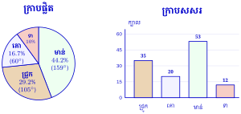
ចំនួនសត្វសរុបគឺ \(\displaystyle N = 35 + 20 + 53 + 12 = 120\) ក្បាល ។
- ក.
តាងទិន្នន័យជាក្រាបផ្លិត ៖
គណនាមុំចម្រៀកថាស និងភាគរយតាងសត្វនីមួយៗ ៖- ជ្រូក ៖ មុំ \(\displaystyle =\frac{360^\circ}{120}\times35=105^\circ\), ភាគរយ \(\displaystyle =\frac{35}{120}\times100\%\approx29.17\%\)
- គោ ៖ មុំ \(\displaystyle =\frac{360^\circ}{120}\times20=60^\circ\), ភាគរយ \(\displaystyle =\frac{20}{120}\times100\%\approx16.67\%\)
- មាន់ ៖ មុំ \(\displaystyle =\frac{360^\circ}{120}\times53=159^\circ\), ភាគរយ \(\displaystyle =\frac{53}{120}\times100\%\approx44.17\%\)
- ទា ៖ មុំ \(\displaystyle =\frac{360^\circ}{120}\times12=36^\circ\), ភាគរយ \(\displaystyle =\frac{12}{120}\times100\%=10\%\)
តារាងបំណែងចែកទិន្នន័យ ៖
ប្រភេទសត្វ ចំនួន (ក្បាល) ភាគរយ (%) មុំចម្រៀកថាស ជ្រូក 35 29.17% \(\displaystyle 105^\circ\) គោ 20 16.67% \(\displaystyle 60^\circ\) មាន់ 53 44.17% \(\displaystyle 159^\circ\) ទា 12 10.00% \(\displaystyle 36^\circ\) សរុប 120 100% \(\displaystyle 360^\circ\) - ខ. តាងទិន្នន័យជាក្រាបសសរ ៖
យកអ័ក្សដេកតាងប្រភេទសត្វ (ជ្រូក, គោ, មាន់, ទា) និងអ័ក្សឈរតាងចំនួនសត្វ (ពី 0 ដល់ 60 ក្បាល)។ កម្ពស់សសរនីមួយៗស្មើនឹងចំនួនសត្វរៀងគ្នាគឺ 35, 20, 53, និង 12 ក្បាល។ - គ.
គណនាភាគរយដែលសត្វជ្រូកលើសសត្វគោ ៖
ចំនួនសត្វជ្រូកលើសសត្វគោគឺ \(\displaystyle 35 - 20 = 15\) ក្បាល ។ករណីធៀបនឹងចំនួនសត្វសរុប (120 ក្បាល) ៖
\[\Delta p_{\text{សរុប}} = \frac{35 - 20}{120} \times 100\% = \frac{15}{120} \times 100\% = 12.5\%\](ឬ \(\displaystyle 29.17\% - 16.67\% = 12.5\%\))
ករណីធៀបនឹងចំនួនសត្វគោ (20 ក្បាល) ៖
\[\Delta p_{\text{គោ}} = \frac{35 - 20}{20} \times 100\% = \frac{15}{20} \times 100\% = 75\%\]
ទាំងពីររបៀបនេះសុទ្ធតែមានអត្ថន័យច្បាស់លាស់ ៖ ជ្រូកលើសគោ \(\displaystyle 12.5\%\) នៃសត្វទាំងអស់ក្នុងកសិដ្ឋាន ឬច្រើនជាងគោ \(\displaystyle 75\%\) ធៀបនឹងចំនួនគោផ្ទាល់។
ក្រាបផ្លិតនិងក្រាបសសរត្រូវបានបង្ហាញដូចរូបខាងលើ ។
ដូចនេះ មាន់មានចំនួនច្រើនជាងគេ (\(\displaystyle 44.17\%\)) ហើយជ្រូកលើសគោ \(\displaystyle 12.5\%\) នៃសត្វសរុប (ឬ \(\displaystyle 75\%\) ធៀបនឹងសត្វគោ)។
ខ្លឹមសារ៖ សៀវភៅពុម្ពគណិតវិទ្យាថ្នាក់ទី៧ របស់ក្រសួងអប់រំ យុវជន និងកីឡា · វាយអត្ថបទ គូររូបភាពឡើងវិញ និងរៀបចំលើអនឡាញដោយលោកគ្រូ សាន សុខលី សម្រាប់ការសិក្សាដោយឥតគិតថ្លៃ និងមិនរកប្រាក់ចំណេញ។ មិនមែនជាការបោះពុម្ពផ្លូវការរបស់ក្រសួងទេ។